Idea
Sátnemátki kokeilee, voisiko pohjoissaamen sanoja oppia liikkumalla tutuissa paikoissa ja kokeilemalla rauhassa. Sitä ei voi hävitä, eikä lukemaan tarvitse osata sujuvasti, koska hahmo sanoo sanat myös ääneen.
- Peli antaa sanan. Ylhäällä lukee esimerkiksi Etsi: eadni.
- Mene sen luo ja ota se. Kulje hahmollasi sen luo, joka mielestäsi sopii, ja paina E tai puhelimessa Ota-painiketta. Kahden väärän arvauksen jälkeen ylhäällä näkyy etsittävän varjo.
- Kuule ja näe, mikä se oli. Väärästäkin arvauksesta oppii, koska hahmo pysähtyy hetkeksi ja kertoo, mikä se oli.
Uusimmat lisäykset
Versio 0.4 tuo pelaajalle oman sanakirjan, uuden ulkoasun ja ohjaimet puhelimeen. Metsä, Ruokakauppa ja Koulu ovat valmiimpia paikkoja, ja muita kannattaa toistaiseksi kokeilla vain vikojen etsimiseen.
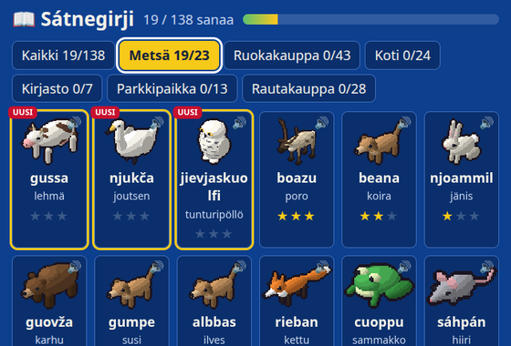
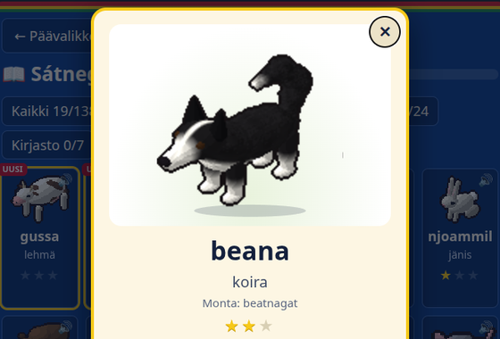
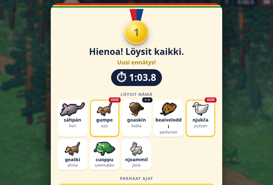
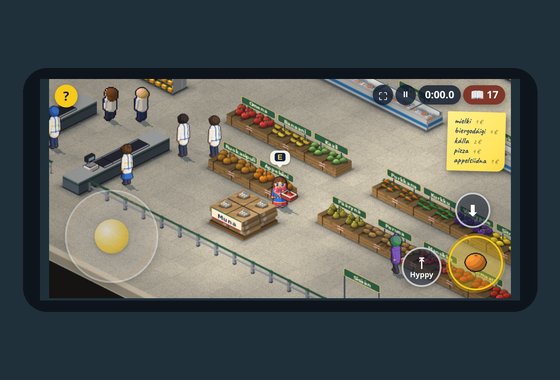
Paikat
Pelattava demo
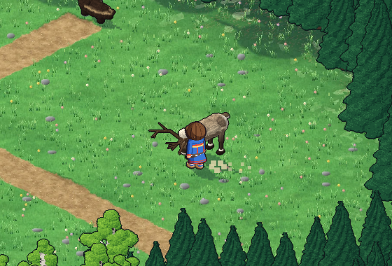
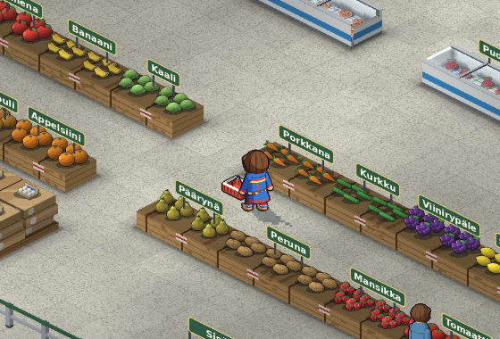
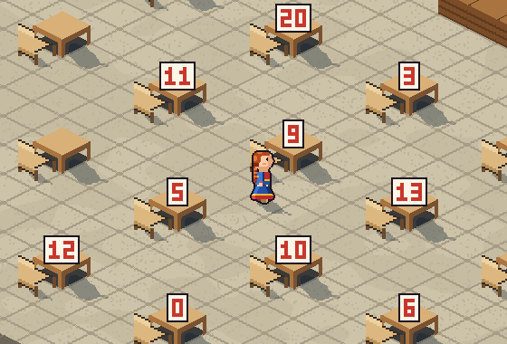
Keskeneräiset paikat
Näitä voi kokeilla tietokoneella. Puhelimessa näkyvät vain yllä olevat kolme paikkaa.
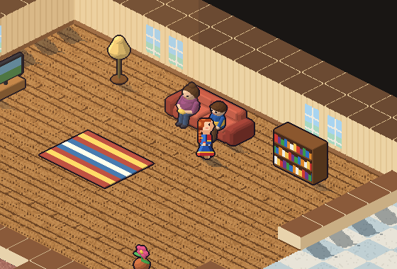
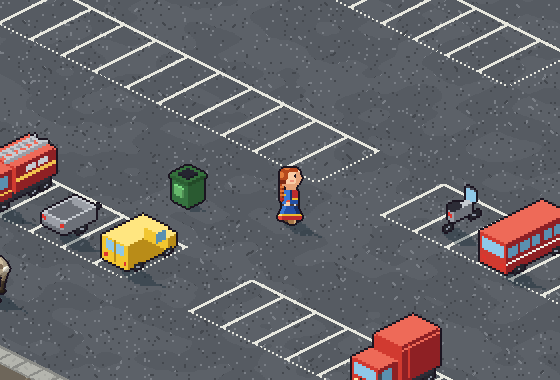
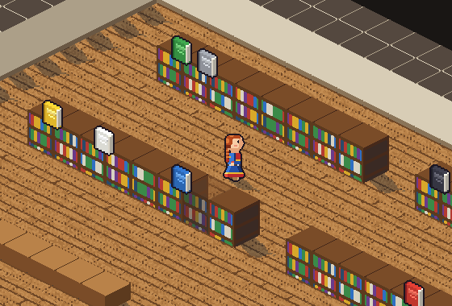
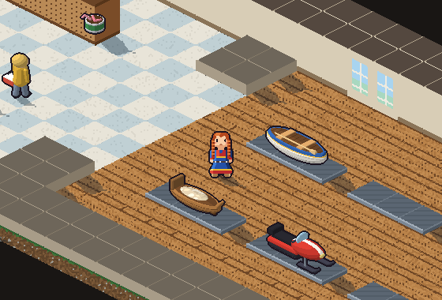
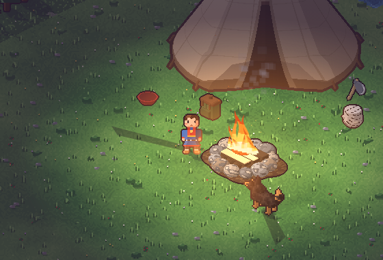
Mitä pelissä harjoitellaan
- Sanasto arjesta. Perhe, koti, eläimet, ruoka, ajoneuvot, koulutavarat ja numerot.
- Sanan kuuleminen ja lukeminen yhdessä. Jokainen sana näkyy ja kuuluu, ja suomennos on vieressä.
- Kielioppia askel kerrallaan. Väri liitetään sanaan ensin perusmuodossa (biila: vielgat) ja sitten sanan edessä (vilges biila).
- Monikko. Sanakortti näyttää myös monikon, esimerkiksi eadni – eatnit.
- Lyhyet lauseet. Dát lea girji. Son lea eadni.
- Oma sanakirja. Löydetyt sanat jäävät talteen, ja niitä voi kuunnella uudelleen. Tähdet näyttävät, mitkä sanat ovat jo tuttuja.
- Kokeilemalla oppiminen. Väärästä valinnasta ei menetä mitään, vain hetken aikaa. Jos haluaa haastetta, kello ottaa aikaa ja parhaat ajat jäävät muistiin.
Nämä ovat pelin tavoitteita. Oppimisvaikutusta ei ole tutkittu.
Näin pelaat
💻 Tietokoneella
- Liiku
- Nuolet tai WASD, tai napsauta maailmaa
- Juokse
- Shift pohjassa
- Hyppää
- Välilyönti
- Ota tai katso
- E, kun olet lähellä
- Kyykisty
- C pohjassa
- Tauko
- Esc
📱 Puhelimessa ja tabletissa
- Liiku
- Tatti vasemmalla. Reunaan asti työnnettynä juokset
- Ota
- Iso painike oikealla. Se näyttää, mikä on lähellä
- Hyppy ja kyykky
- Painikkeet sen vieressä
- Tauko
- ⏸ yläkulmassa tai takaisin-painike
Käännä puhelin vaakatasoon. Selaimen valikosta pelin voi lisätä aloitusnäyttöön, jolloin se aukeaa koko näytölle.
Päävalikon kytkimistä voi valita, näkyykö teksti vai pelataanko pelkän äänen varassa, ovatko ohjekuplat päällä ja otetaanko aikaa. Kaupassa nuolet näyttävät tien korille, kassalle ja ovelle.
Mitä demo tarkoittaa käytännössä
- Sanat: Sanat ja suomennokset on poimittu sanakirjoista koneellisesti, ja lauseet on muodostettu koneellisesti. Niitä ei ole tarkistettu.
- Puhe: Ääni on puhesynteesiä eikä oikean puhujan puhetta, joten ääntämys voi olla paikoin väärä.
- Grafiikka: Hahmojen ja gáktien yksityiskohtia ei ole tarkistettu kattavasti. Ulkoasu on luonnosmainen.
- Kieli: Pelin ohjeet ovat suomeksi ja norjaksi (bokmål). Norjaksi on toistaiseksi käännetty vain Metsä, Ruokakauppa ja Koulu.
- Muutokset: Paikkoja, tasoja ja sääntöjä voi tulla, muuttua tai poistua. Tallennetut ajat voivat kadota päivityksissä.
Yksityisyys
Pelissä ei ole mainoksia, seurantaa eikä käyttäjätilejä. Nimi, hahmo, sanakirja ja parhaat ajat tallentuvat vain omaan selaimeesi, eikä niitä lähetetä minnekään.
Uutta versioissa 0.1.5–0.4.4
- Sátnegirji, oma sanakirja. Jokainen löydetty sana tallentuu pelaajan omaan sanakirjaan kuvan ja käännöksen kanssa. Sanaa koskettamalla eläin liikkuu ja ääni sanoo sanan. Sana saa tähden, kun se on löydetty 3, 10 ja 25 kertaa, ja ensimmäinen sana juhlitaan fanfaarilla.
- Uusi ulkoasu. Päävalikossa on kuvalliset kytkimet tekstille, ohjeille ja kellolle. Kellon voi kytkeä pois, jolloin aikaa ja parhaita aikoja ei näytetä. Pelissä etsittävä sana näkyy ylhäällä kysymysmerkkinä, ja kahden väärän arvauksen jälkeen siinä näkyy sen varjo. Hahmo puhuu puhekuplissa, ja kierroksen lopussa parhaasta ajasta saa mitalin.
- Tauko. Esc tai ⏸-painike pysäyttää pelin ja avaa valikon, josta voi jatkaa, aloittaa alusta tai vaihtaa grafiikkaa.
- Puhelimelle. Kosketusnäytöllä on peliohjain: vasemmalla tatti, oikealla painikkeet. Peli täyttää vaakatasoon käännetyn näytön, ja sen voi lisätä puhelimen aloitusnäyttöön omana kuvakkeenaan. Äänet ovat nyt MP3-muodossa, joten peli latautuu paljon nopeammin.
- Norjankielinen versio aloitettu. Pelin yläkulman lipuista voi vaihtaa ohjeiden kielen suomesta norjaksi (bokmål). Saame pysyy samana. Norjaksi on toistaiseksi käännetty Metsä, Ruokakauppa molempine tasoineen ja Koulu kaikkine tehtävineen, ja muut paikat tulevat myöhemmin. Ruokakaupan kyltit kirjoitetaan pelaajan kielellä.
- Grafiikka näytönohjaimella. Peli voi piirtää näytönohjaimella (WebGL 2), ja se on käytössä aina, kun se toimii. Silloin paikoissa on valoa ja varjoja: auringon varjot, valokiilat ikkunoista ja puiden välistä sekä pehmeä hehku. Pelin alla olevasta Grafiikka-valinnasta voi vaihtaa näytönohjaimen ja perusgrafiikan välillä.
- Uudistetut paikat. Kirjasto, Koti, Parkkipaikka ja Rautakauppa on tehty uusiksi 3D-malleina. Kirjastossa on jokaiselle värille oma hyllynsä ja lukupöydät, Parkkipaikan ympärillä pienen kaupungin kaupat ja asunnot, ja Rautakaupassa jokaisella tavaralla on oma paikkansa.
- Sanoja lisätty.
- Pelaajat ja parhaat ajat. Kaikki laitteella pelanneet säilyvät hahmonsa passikuvan kanssa, ja jokaisella on omat parhaat aikansa. Tason sivulla näkyvät kolme parasta aikaa pelaajien kuvineen.
- 3D-grafiikka. Máhtte, Biret, Metsä, Ruokakauppa ja molemmat luokat on tehty uusiksi 3D-malleina. Hahmoilla on yhdeksän kampausta, liukusäätimet hiusten ja silmien värille ja liikkuva suu.
- Isompi Metsä. Metsä on noin kaksi kertaa isompi, ja siellä on Pielpajärven kirkko. Eläimillä on uudet liikkeet, jotkut nukkuvat ja pakenevat, jos niitä ei lähesty hiipien, ja uusina ovat susi, ahma ja ilves.
- Uusi Ruokakauppa. Kaupassa on kaksi kassaa ja portti, kylmäkaapit ja pakastimet, lihatiski ja suomenkieliset kyltit. Jokaisella ruoalla on oma paikkansa, ja uusina ovat näkkileipä, ruisleipä, paahtoleipä, savuliha ja tee. Jos kori putoaa, tavarat palaavat ostoslistalle, kunnes ne poimii uudelleen.
- Isompi pelinäkymä. Ruokakaupassa, Luokassa ja Metsässä iso selainikkuna näyttää enemmän paikkaa, ja zoomauksen voi valita. Ostoslista on muistilappu, ja ohjeet ovat laatikossa, jonka voi sulkea.
- Uusi luokka. Pieni aurinkoinen luokka, jossa opettaja kirjoittaa numeroita taululle. Kirjoita numerot -tehtävässä luet luvun saameksi ja näppäilet sen numeroina, ja vaikeammassa Kirjoita sanalla -tehtävässä kirjoitat numeron sanana saamelaisella näppäimistöllä. Luokkatoverit viittaavat, jos odotat liian kauan, ja opettaja kiittää vastaajaa nimeltä.
- Puhekuplat luokassa. Kun luokassa joku puhuu, sanottu näkyy puhekuplassa saameksi ja suomeksi. Kummankin kielen voi kytkeä pois tason valinnan yhteydessä.
- Kaupan kassa. Ruokakaupassa kassa on joka kierroksella nainen tai mies, kaupan omissa vaatteissa, ja muut asiakkaat jonottavat kumpaankin kassaan.
- Rautakauppa. Uusi kauppa, jossa on työkaluja, kalastustarvikkeita, vaatteita ja oma näyttelytila isoille tavaroille, kuten veneelle ja moottorikelkalle. Se on vielä keskeneräinen: sitä voi testata, mutta sen kehitys on vasta alkamassa.
- Laavu. Rauhallinen ilta ilman kelloa: kaada koivu, halkaise puut, sytytä nuotio, laita ruokaa, leiki koiran kanssa ja mene nukkumaan, kun nuotio sammuu. Se on toistaiseksi harmaana valikossa, kunnes sen uusi grafiikka on valmis.
- Valikon osiot. Pelin valikossa on kaksi osiota: pelattava demo ja keskeneräiset kentät. Kauppa on nyt nimeltään Ruokakauppa.
- Paikkojen kuvat. Pelin valikossa paikan kuva näkyy himmeästi painikkeen takana. Eläimet-paikan nimi on nyt Metsä.
- Kauppareissu. Ota kori, hae tavarat käsin kirjoitetun listan mukaan missä järjestyksessä tahansa, jonota kassalle, maksa, ota kassi ja lähde ovesta. Kaupassa on muita asiakkaita, kassa, lihatiski ja hyllyjä täyttävä työntekijä.
- Vaikeampi kauppataso. Samaa tavaraa haetaan useita kappaleita, ja hinta näppäillään itse. Ruokia on nyt paljon enemmän.
- Tarkempi grafiikka. Kaikki paikat, niiden ihmiset ja eläimet sekä pelaajan hahmo on piirretty tarkemmin.
- Laskeminen ääneen. Kaupan vaikeammalla tasolla hahmo laskee tavarat ääneen: Okta. Guokte. Ja golbma. Doarvái mielkki. Ostoslista on kirjoitettu kuten oikea ostoslista: 5 × mielkki.
- Eläimet reagoivat. Eläintä voi silittää, kissa kehrää, koira läähättää, perhonen laskeutuu kädelle ja linnut lentävät pois.
- Väärä valinta pysäyttää. Väärän valinnan jälkeen hahmo seisoo kolme sekuntia paikallaan ja kertoo, mikä se oli.
- Parhaat ajat alusta. Versiossa 0.1.7 kaikki parhaat ajat nollataan kerran, koska kierrokset ovat muuttuneet paljon. Nimi ja hahmo säilyvät.
Kiitokset ja lähteet
Sanat ja kieliteknologia tulevat saamen kieliteknologian yhteisöltä: GiellaLT, Divvun ja Giellatekno (UiT Norjan arktinen yliopisto). Puhe on tehty Divvunin ja Giellateknon puhesynteesillä. Sanat kulkevat pelille Sátni FST -sanakirjan kautta.
Grafiikka ja koodi on tehty tätä peliä varten tekoälyn avulla. Tekijä: Juha Somby, satni@somby.fi. Lisenssi GPL-3.0. Tekijät ja lisenssit · Lähdekoodi · Anna palautetta
Idé
Sátnemátki prøver ut om man kan lære nordsamiske ord ved å bevege seg på kjente steder og prøve seg fram i ro og mak. Man kan ikke tape, og man trenger ikke å lese flytende, for figuren sier ordene høyt også.
- Spillet gir deg et ord. Øverst står det for eksempel Finn: eadni.
- Gå bort til det og trykk E. Gå med figuren din til det du tror passer. På mobilen trykker du Ta eller på det.
- Hør og se hva det var. Du lærer også av feil svar, for figuren stopper litt og forteller hva det var.
Det nyeste
Versjon 0.4 gir spilleren en egen ordbok, et nytt utseende og kontroller for mobilen. Skogen, Matbutikken og Skolen er de mest ferdige stedene, og alle tre finnes på norsk.
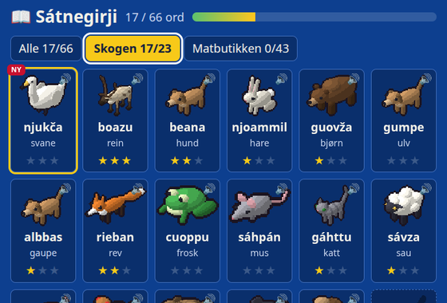
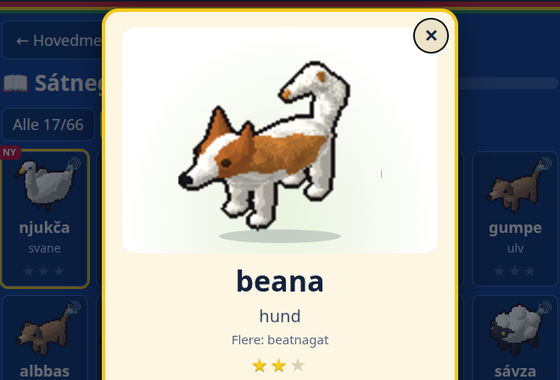
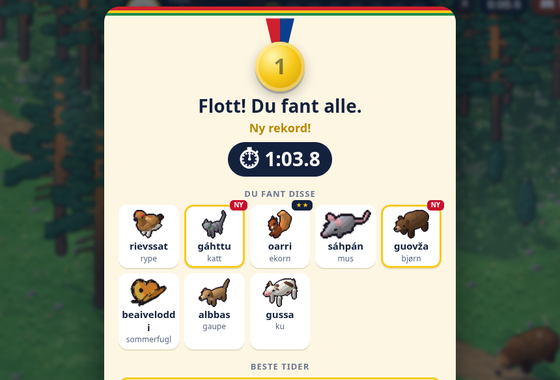
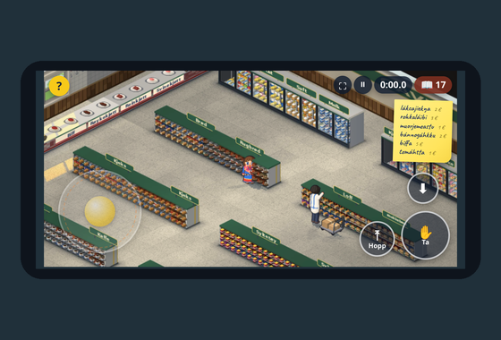
Steder
De andre stedene (Hjemme, Parkeringsplassen, Biblioteket, Jernvarehandelen og Lavvoen) er ikke ferdige ennå og finnes foreløpig bare på finsk.
Hva spillet øver på
- Ord fra hverdagen. Familie, hjem, dyr, mat, kjøretøy, skolesaker og tall.
- Å høre og lese ordet samtidig. Hvert ord vises og høres, og oversettelsen står ved siden av.
- Grammatikk ett steg om gangen. Fargen knyttes først til ordet i grunnform (biila: vielgat) og så foran ordet (vilges biila).
- Flertall. Ordkortet viser også flertall, for eksempel eadni – eatnit.
- Korte setninger. Dát lea girji. Son lea eadni.
- Å lære ved å prøve. Et feil valg koster ingenting, bare litt tid. Vil du ha en utfordring, tar klokka tiden, og de beste tidene blir husket.
- Din egen ordbok. Ordene du finner, blir tatt vare på, og du kan høre dem igjen. Stjernene viser hvilke ord du allerede kan.
Dette er målene med spillet. Om man faktisk lærer av det, er ikke undersøkt.
Slik spiller du
💻 På datamaskin
- Gå
- Piltastene eller WASD, eller klikk i verdenen
- Løp
- Hold Shift nede
- Hopp
- Mellomrom
- Ta eller se
- E når du er nær
- Huk deg ned
- Hold C nede
- Pause
- Esc
📱 På mobil og nettbrett
- Gå
- Spaken til venstre. Skyver du den helt ut, løper du
- Ta
- Den store knappen til høyre. Den viser hva som er nær
- Hopp og huk
- Knappene ved siden av
- Pause
- ⏸ øverst i hjørnet eller tilbake-knappen
Snu mobilen på siden. Fra nettleserens meny kan du legge spillet til på startskjermen, så åpnes det i fullskjerm.
Med bryterne i hovedmenyen velger du om teksten vises eller om du spiller bare med lyd, om hjelpeboblene er på, og om tiden tas. I butikken viser piler veien til kurven, kassa og døra.
Hva demo betyr i praksis
- Ord: Ordene og oversettelsene er hentet maskinelt fra ordbøker, og setningene er laget maskinelt. De er ikke kontrollert.
- Tale: Stemmen er talesyntese og ikke en ekte person som snakker, så uttalen kan noen steder være feil.
- Grafikk: Detaljene på figurene og koftene er ikke grundig kontrollert. Utseendet er skisseaktig.
- Språk: Instruksjonene finnes på finsk og norsk (bokmål). På norsk er foreløpig bare Skogen, Matbutikken og Skolen oversatt, og den norske teksten er ikke lest av en som har norsk som morsmål.
- Endringer: Steder, nivåer og regler kan komme, endre seg eller forsvinne. Lagrede tider kan bli borte ved oppdateringer.
Personvern
Spillet har ingen reklame, ingen sporing og ingen brukerkontoer. Navnet, figuren, ordboka og de beste tidene lagres bare i din egen nettleser og sendes ikke noe sted.
Nytt i versjon 0.1.5–0.4.4
- Sátnegirji, din egen ordbok. Hvert ord du finner, lagres i din egen ordbok med bilde og oversettelse. Trykk på et ord, så beveger dyret seg og stemmen sier ordet. Ordet får en stjerne når det er funnet 3, 10 og 25 ganger, og det første ordet feires med en fanfare.
- Nytt utseende. Hovedmenyen har brytere med bilder for tekst, hjelp og klokke. Klokka kan slås av, og da vises verken tid eller beste tider. I spillet står ordet du skal finne øverst med et spørsmålstegn, og etter to feil gjetninger vises skyggen av det. Figuren snakker i snakkebobler, og på slutten av runden får du en medalje for beste tid.
- Pause. Esc eller ⏸-knappen stopper spillet og åpner en meny der du kan fortsette, starte på nytt eller bytte grafikk.
- For mobilen. På berøringsskjerm har spillet egne kontroller: en spak til venstre og knapper til høyre. Spillet fyller skjermen når mobilen ligger på siden, og du kan legge det til på startskjermen med eget ikon. Lydene er nå i MP3-format, så spillet lastes mye raskere.
- Norsk versjon påbegynt. Med flaggene øverst bytter du språket på instruksjonene mellom finsk og norsk (bokmål). Samisken er den samme. Foreløpig er Skogen, Matbutikken med begge nivåene og Skolen med alle oppgavene oversatt, og de andre stedene kommer senere. Skiltene i Matbutikken skrives på spillerens språk.
- Grafikk med skjermkortet. Spillet kan tegne med skjermkortet (WebGL 2), og det brukes alltid når det fungerer. Da har stedene lys og skygge: skygger fra sola, lysstriper fra vinduene og mellom trærne og en myk glød. Under spillet kan du bytte mellom skjermkort og enkel grafikk med Grafikk-valget.
- Fornyede steder. Biblioteket, Hjemme, Parkeringsplassen og Jernvarehandelen er laget på nytt som 3D-modeller. Biblioteket har en egen hylle for hver farge og lesebord, rundt Parkeringsplassen ligger butikkene og leilighetene i en liten by, og i Jernvarehandelen har hver vare sin egen plass.
- Flere ord.
- Spillere og beste tider. Alle som har spilt på enheten, blir husket med et passbilde av figuren sin, og hver av dem har sine egne beste tider. På nivåsiden vises de tre beste tidene med spillernes bilder.
- 3D-grafikk. Máhtte, Biret, Skogen, Matbutikken og begge klasserommene er laget på nytt som 3D-modeller. Figurene har ni frisyrer, glidebrytere for hår- og øyenfarge og en munn som beveger seg.
- Større skog. Skogen er omtrent dobbelt så stor, og der står Pielpajärvi kirke. Dyrene har nye bevegelser, noen sover og flykter hvis du ikke sniker deg innpå, og ulv, jerv og gaupe er nye.
- Ny matbutikk. Butikken har to kasser og en port, kjøleskap og frysere, en kjøttdisk og skilt. Hver matvare har sin egen plass, og knekkebrød, rugbrød, loff, røykekjøtt og te er nye. Hvis kurven faller, havner varene tilbake på handlelista til du plukker dem opp igjen.
- Større spillvindu. I Matbutikken, på Skolen og i Skogen viser et stort nettleservindu mer av stedet, og du kan velge zoom. Handlelista er en huskelapp, og instruksjonene står i en boks som kan lukkes.
- Nytt klasserom. Et lite, solfylt klasserom der læreren skriver tall på tavla. I oppgaven Skriv tallene leser du tallet på samisk og taster det med sifre, og i den vanskeligere oppgaven Skriv med ord skriver du tallet som ord med samisk tastatur. Klassekameratene rekker opp hånda hvis du venter for lenge, og læreren takker den som svarer, ved navn.
- Snakkebobler på skolen. Når noen snakker i klasserommet, vises det som blir sagt i en snakkeboble på samisk og på instruksjonenes språk. Hvert av språkene kan slås av når du velger nivå.
- Kassa i butikken. I Matbutikken er kassereren en kvinne eller en mann hver runde, i butikkens egne klær, og de andre kundene står i kø ved begge kassene.
- Jernvarehandelen. En ny butikk med verktøy, fiskeutstyr, klær og en egen utstillingsplass for store ting som båt og snøskuter. Den er ikke ferdig: du kan prøve den, men utviklingen har så vidt begynt.
- Lavvoen. En rolig kveld uten klokke: felle en bjørk, kløyve ved, tenne bål, lage mat, leke med hunden og legge seg når bålet slukner. Den er grå i menyen inntil den nye grafikken er ferdig.
- Deler i menyen. Menyen i spillet har to deler: spillbar demo og uferdige steder. Butikken heter nå Matbutikken.
- Bilder av stedene. I menyen vises et svakt bilde av stedet bak knappen. Stedet Dyr heter nå Skogen.
- Handletur. Ta en kurv, hent varene etter en håndskrevet liste i den rekkefølgen du vil, still deg i kø ved kassa, betal, ta en pose og gå ut døra. I butikken er det andre kunder, en kasserer, en kjøttdisk og en ansatt som fyller hyllene.
- Vanskeligere butikknivå. Du henter flere av samme vare og taster prisen selv. Det er nå mange flere matvarer.
- Mer detaljert grafikk. Alle stedene, menneskene og dyrene der og spillerens figur er tegnet mer detaljert.
- Telle høyt. På det vanskeligere butikknivået teller figuren varene høyt: Okta. Guokte. Ja golbma. Doarvái mielkki. Handlelista er skrevet som en ekte handleliste: 5 × mielkki.
- Dyrene reagerer. Du kan klappe dyrene, katten maler, hunden peser, sommerfuglen setter seg på hånda og fuglene flyr sin vei.
- Feil valg stopper deg. Etter et feil valg står figuren stille i tre sekunder og forteller hva det var.
- Beste tider på nytt. I versjon 0.1.7 ble alle beste tider nullstilt én gang, fordi rundene hadde endret seg mye. Navn og figur ble beholdt.
Takk og kilder
Ordene og språkteknologien kommer fra det samiske språkteknologimiljøet: GiellaLT, Divvun og Giellatekno (UiT Norges arktiske universitet). Talen er laget med Divvuns og Giellateknos talesyntese. Ordene kommer til spillet gjennom ordboka Sátni FST.
Grafikken og koden er laget for dette spillet med hjelp av kunstig intelligens. Laget av Juha Somby, satni@somby.fi. Lisens GPL-3.0. Skapere og lisenser (på engelsk) · Kildekode · Gi tilbakemelding